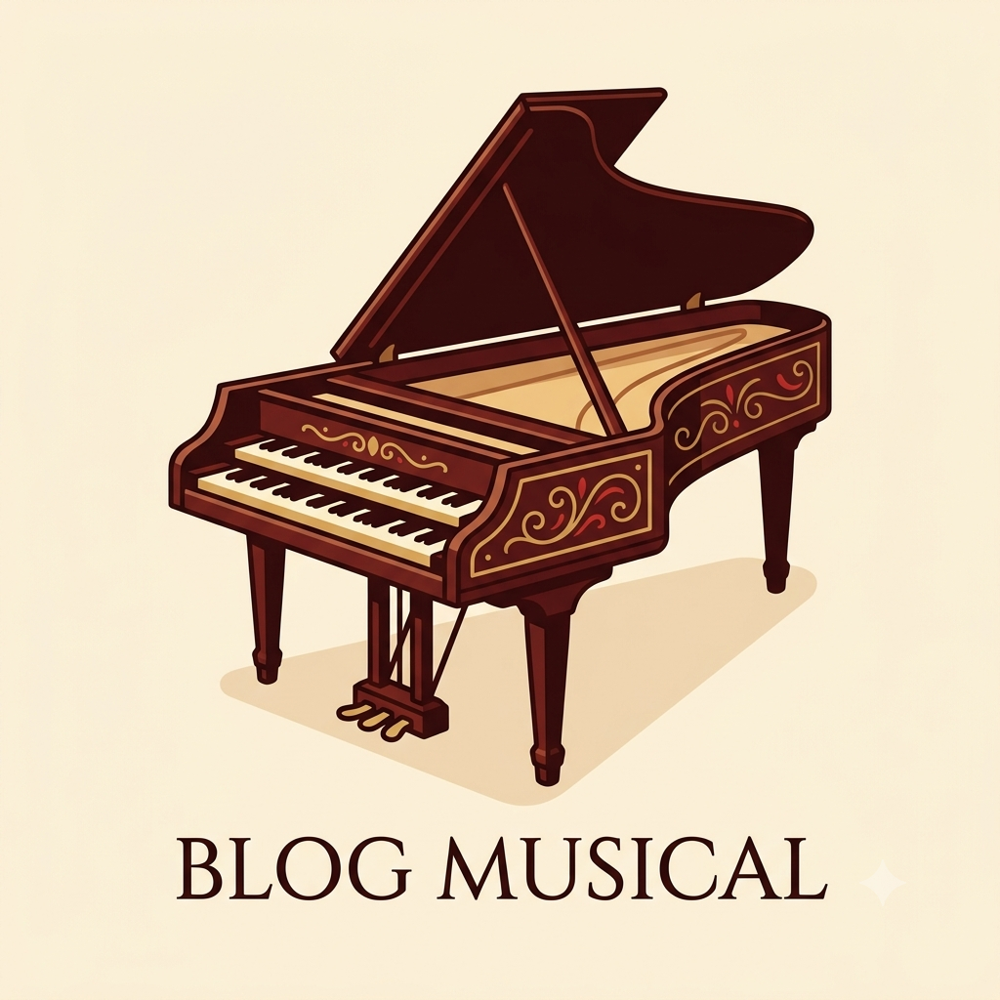

Meu primeiro post
Por: Kauan Galvão
Boas-vindas ao meu novo blog! Aqui vou compartilhar dicas e curiosidades sobre música clássica e instumentos músicais.
Aqui vou compartilhar curiosidades sobre música clássica e instrumentos músicais.
Por: Kauan Galvão
Boas-vindas ao meu novo blog! Aqui vou compartilhar dicas e curiosidades sobre música clássica e instumentos músicais.

Por: Kauan Galvão
É um instrumento de cordas pinçadas acionado por um teclado, popular entre os séculos XVI e XVIII. Ao pressionar uma tecla, uma pequena palheta (plectro) belisca a corda correspondente, gerando um som metálico, brilhante e distinto, sem variação de volume por intensidade de toque.